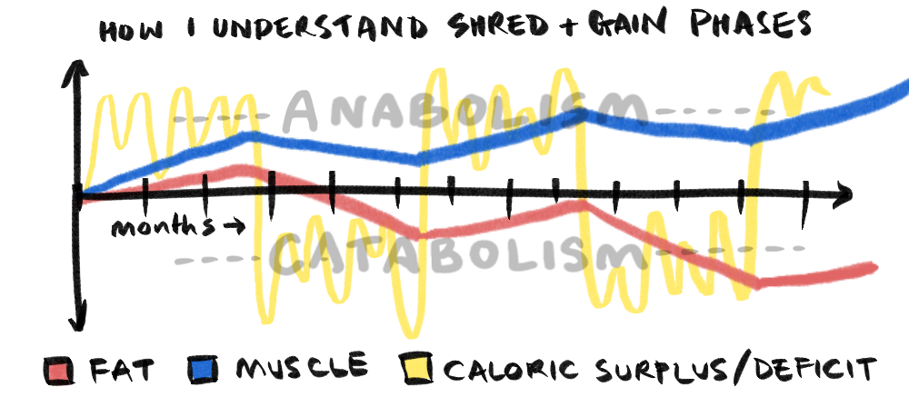
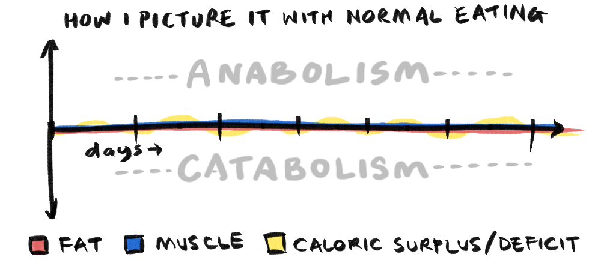
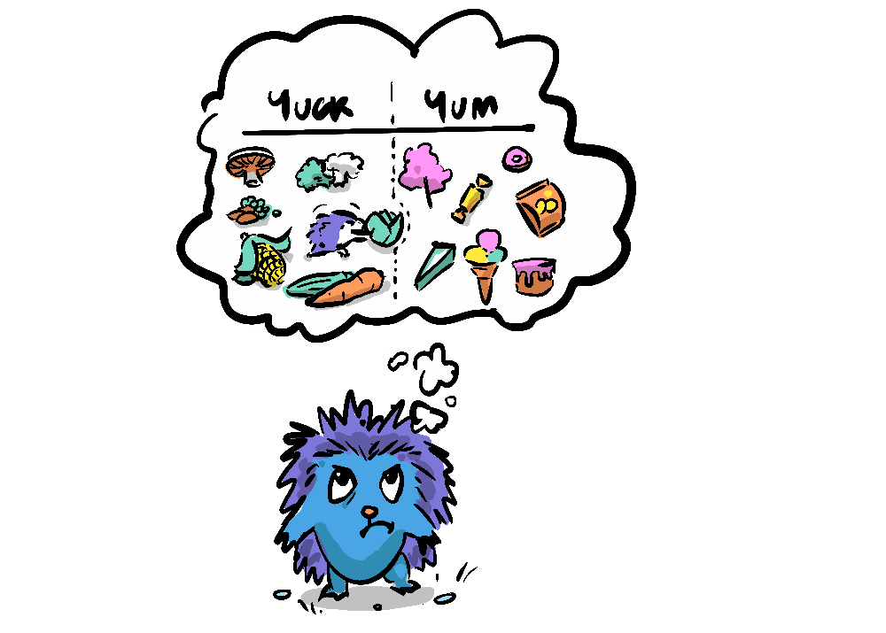
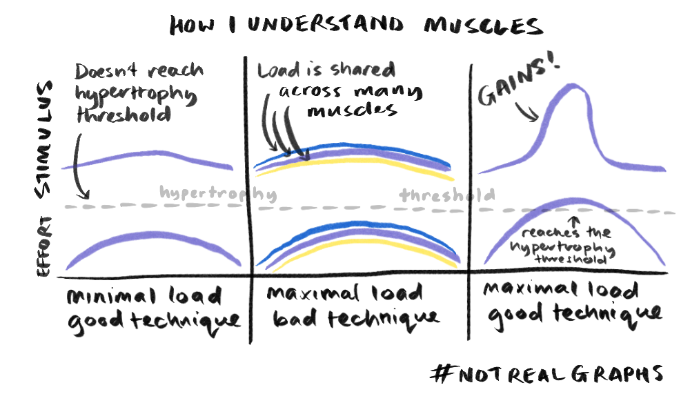

Zero-sum games are all around us, from a seesaw in a playground, to a rocket breathing its fiery breath down to earth, propelling it up into space—Newton's third law holds that every action has an equal and opposite reaction. These ubiquitous zero-sum games help to keep systems in balance, but this sometimes makes change difficult.
Like me, you may have made a new year's resolution, perhaps, like me, you want to make a positive change to your health. But we know old habits die hard, and heading into month two, perhaps you're starting to feel the temptation to revert to the mean, perhaps you've already fallen off the wagon! Well, this year I'm taking a non-zero-sum approach that I'd like to share with you, which might help us stick to our goals (as usual, I am unqualified to offer health advice, so heed these pronouncements at your potential peril)
Now every self-improvement journey starts with a "why" or in my case a few of them. I'm 43 and starting to have to think about staying in shape, recent blood-tests detected slightly high cholesterol, low protein, nothing earth-shattering but I also have a family history of type 2 diabetes, which is a pre-cursor to dementia and Alzheimer's which also run in my family.
I'm also a keen rock-climber, and got pretty fit early last year.
But after a shoulder injury (unrelated to training) and just not focusing on any sort of exercise or diet, I am uuuuuunfit, and as a rock-climber have very much returned to a plateau of about a V4 level (for context, a teenager could probably climb at this level given about a month of practice, if not immediately). I've been struggling to do 5 chin-ups (certainly not a muscle-up)—not a great look for a rock-climber.
I've also never been at an ideal weight and strength (I've been skinny and weak or strong and slightly over-weight). This year, things are going to be different, why? Well, first, I have enough whys.
- Avoid poor blood test readings > diabetes > dementia
- Improve at rock-climbing (V6—requires getting lighter and stronger)
- Get in proper shape for once (a benefit of getting lighter and stronger)
I encourage you to list your whys—sometimes one particularly strong why, can be more effective than a list.
Another reason this is going to work this time is that I've researched and tried various approaches over the past 5-10 years; fasting, no-sugar, bulking and shredding, strict calorie counting, volumetric weight training, task-specific strength training and many other approaches, and these trials have all helped inform me about what works, and where the results are zero-sum.
Like in nature, there are many systems in our bodies that are self-balancing: Exercise will-power in one area of your life and you'll find yourself cutting a corner in another, go for a jog—treat yourself with a Snickers, do a long run—take a 2 week break. Then there's over-training, leading to injury, and your body has other ways of cheating you, as Kurzgesagt explains in thisvideo about how consistent exercise ends up increasing your energy efficiency, meaning you burn barely any more calories than you do when inactive (more on this later, it's not that simple). Then you have the processes of muscle building and weight loss working against each other, because as the ever irreverent Dr Mike Israetel explains catabolism (the breaking down of nutrients such as fats) and anabolism (the building of tissue such as muscle) don't operate well simultaneously, resulting in a cancelling out of your efforts.
"If you think your best efforts are spent in recomping or lean gaining and you never pay attention to intentional massing or fat loss phases you're not getting the most bang for your buck most of the time"—Dr. Mike Israetel

So, this approach is about eliminating, as much as possible, zero-sum games from this journey.
ZERO-SUM GAMES
- Exercising for weight loss: results in increased appetite, and ends up becoming efficient, so the more you exercise, the less you burn for every unit of exercise.
- Yo-yo dieting: while a professional body-builder might benefit from going through a bulk-shred cycle, for a lay person like myself this feels like focus followed by relaxation which ends up cancelling (and likely falling off the wagon). It also means that most of the time, you're not in an ideal condition.
- Losing weight too fast: can lead your body to have a starvation response leading to the lowering of metabolism meaning less energy.
- Anabolism vs Catabolism: if you are trying gain muscle, you need a calorie surplus, but if you want to lose weight you need a calorie deficit... difficult to do both at once.
- Will-Power: requiring will-power to drive your project is destined to lead to corrosion of other areas of your life, people naturally morally license.
- Hyping motivation: our dopaminergic system is self-balancing, so artificially trying to drive up motivation can lead to high stress and low baseline motivation.

NEGATIVE-SUM GAMES
- Eating sugar (my particular vice): adds calories without protein, generating fat and cravings, also reduces the perceived flavour of healthy foods.
- Not getting enough sleep: reduces repair, growth and will-power.
- Not getting enough water increases hunger, reduces concentration and will-power.
Also, simplicity is paramount, I've tried meticulous -tracking, and workout tracking, which has worked but is not sustainable during busy periods. However, going through these periods gave me the knowledge to design simple meals that fit within desired macros.
Each week I make up a large tray of seasonal roast vegetables with a couple of apples and a can of cherry tomatoes to make the mix really tasty. I then store them in the fridge as a nutritious source of slow-burning carbohydrates throughout the week.
I don't eat much meat, so I get 150g/day protein from egg white (whole eggs will increase cholesterol), Whey protein as well as a variety of plant-based proteins, greek yoghurt, and beans. On occasion I have salmon, as a protein source which adds variety and taste to my daily veggies. I take 5g creatine, which is (noticeably) effective for muscle retention and growth, and after a lot of research, safe. We have a normal balanced dinner.
While Dr. Israetel warns against trying to lose weight and gain muscle at the same time (recomping) because the processes of anabolism (building muscle) and catabolism (burning fat) conflict with each other, he does give a caveat that this is not so much of a problem if you're out of shape or new to working out.
"In a few circumstances ... you're not used to much or any of diet or training structure, okay you're a noob, or you make your diet and training structure much more intelligent ... you're finally eating enough protein stuff like that ... you absolutely can gain muscle and lose fat at the same time."—Dr. Mike Israetel
I'm also addressing the zero-sum trade off between anabolism and catabolism by fasting for 14-16 hours each day (7-8pm to 10-11am). I'm not super strict, my basic rule is "Feel hungry some of the day, feel full some of the day". This way I'm cycling between anabolism and catabolism. Hopefully Dr. Israetel would approve.
Sugar is a negative-sum game, the more you have the more you want, it affects sleep (giving you restless legs at night), it makes you crash, it's bad for your skin, and has terrible long term effects (as mentioned; type 2 diabetes, dementia etc). But it tastes soooo good.
I'm a sugar addict, but I know from experience that if I cut sugar from my diet entirely (no products above 5% sugar, and sticking to berries if I want fruit) I stop having cravings after about 3-4 days. It also makes other (lower calorie) foods tastier (your tastebuds literally get replaced with new, more sensitive taste buds in a couple of weeks). So, without having to count calories, you naturally don't eat as many.
This is where you focus on individual muscles giving them a large amount of volume or time under tension without activating the supporting muscles, because sharing the load across muscles means that you are not pushing any one particular muscle as far as it can go, and it is in those periods of peak stimulus that muscle growth is optimised. This is in itself a way of harnessing non-zero-sum gains because the growth is disproportionate to the work put in.
I love a good motivational video, but there are diminishing returns on motivation, and it's not just that you get used to it, it's that your brain is self-balancing, so if you artificially drive up motivation, you're going to get a corresponding decrease in baseline motivation. Interestingly too, your dopamine system and your adrenaline system work differently, if you spike adrenaline, it will spike dopamine, but the effects on your baseline levels, adrenaline spikes make you more sensitive to adrenaline, but dopamine spikes make you less sensitive to dopamine. So, if you're hyping yourself up with adrenaline, you're going to need more and more adrenaline to get the same effect, leaving you with a baseline of high stress and low motivation.
So, there we have it, let's look at the non-zero-sum games that we're replacing the zero-sum games with.NON-ZERO-SUM GAMES
The Basics
- Prioritise sleep: helps to keep focused, reduces cravings, actually builds tissue
- Hydration: aids focus and will-power, reduces cravings
The Specifics
- Feel hungry once a day (catabolism). Feel full once a day (anabolism): a simple rule that doesn't have the friction of meticulous monitoring
- Fast 7pm—11am: allows for a period of catabolism, clears out system, not eating before bed helps sleep.
- No sugar: avoids getting out of balance, makes healthier food tastier
- Hypertrophy training: during an anabolic phase (nutritious food) is the most efficient way of building muscle.
- Simplicity, consistency and balance: help to avoid failures of will power and eliminate the need to artificially drive motivation.
Even More Specifics
I'm doing 2 runs (~5km) and 2 climbs per week, and 3 days of hypertrophy & strength training; biceps (dumbbell curls, chin-ups), triceps (skull crushers, dips, press-ups), shoulders (side lifts). I'm skipping leg day indefinitely.
While exercise isn't the most effective way to lose weight, for me I need to work out for my rock-climbing goals, but there's also a good reason why everyone benefits from exercise.

Earlier we said that working-out becomes efficient, well that's not actually entirely accurate, it’s more that we evolved to exercise a lot more than we do, so our bodies can exercise very efficiently, without burning much energy—this is your body's norm, it's the sedentary lifestyle that your body actually adapts to, finding ways to burn calories when you're not doing anything. This can come in the form of overreacting to niggles, inflammation and auto-immune overreactions, giving you restless leg syndrome when you're trying to sleep, night sweats, higher blood pressure, increased hearth rate, nervous shakiness, embarrassed flushing, loads of wonderful calorie burning mechanisms that require no exercise and hit us when we least want them to. Over-all these lead us to be more anxious, stressed, tired and physically inflamed.
As well as the benefits for strength and endurance, working out is actually about quality of life and longevity, making our days less stressed and our body less inflamed, which in turn makes us less likely to create physical or mental pathologies that lead to physical and mental decline, and ultimately premature death. But, if that's not a good enough reason: you can't get jacked without exercising.
Zero-sum games can make returning to old habits seem inevitable. But by finding non-zero-sum fitness games we might be able to tip the scales... This has been a useful realisation for me, and hopefully it can help you with your health and fitness too. If you'd like more detail about my training and diet this year, I have spreadsheets and all sorts to share... of course the proof will be in pudding, or lack there of, by the time next year rolls around, let's hope Newton's first law holds that an object in motion stays in motion.
"an object in motion tends to stay in motion, an object at rest tends to stay at rest"—Newton's first law
Please let me know if you like this sort of more personal content, I realise it's a bit different, feel free to share your own training tips or goals in the comments.